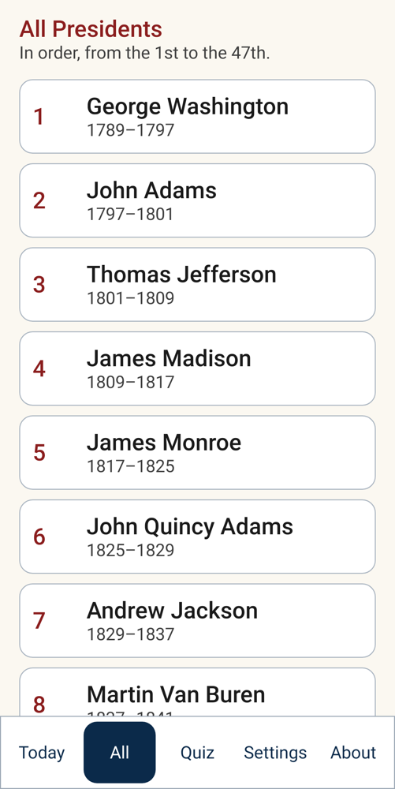

Coming late October
A president a day, in big, clear type
Peggy's Presidents brings you a president of the United States each day, with a few short facts. Free, private and no ads. In development for iPhone, iPad and Android.
Coming late October
Peggy's Presidents brings you a president of the United States each day, with a few short facts. Free, private and no ads. In development for iPhone, iPad and Android.

This application was inspired by Peggy and her love of historical facts.
Five big buttons along the bottom (Today, All, Quiz, Settings and About) are all there is to learn. Nothing pops up, and the app never sends notifications.
Tap All to see the list from George Washington on, with each one's years in office.

Every fact is objective and plain: dates, places, firsts. There are no opinions, no rankings and no political commentary about any president, so it's comfortable for everyone.
Facts come from public-domain data (Wikidata and the congress-legislators project), checked against U.S. government sources such as the National Archives, the Library of Congress, the National Park Service and the U.S. Congress. The sentences are our own plain-English writing, and every fact is checked before it goes in the app.
A sample: John Adams was the first president to live in the White House. He moved in during November 1800, while it was still unfinished.
It takes about five minutes. Install it, put the icon on the first Home Screen, and choose Large in Settings. There's nothing to sign in to, and nothing to keep logged in.
Email us at support@zyzygy.us with "Peggy's Presidents" in the subject, and we'll write back once when it's in the stores. We'll only use your address for that, and we'll delete it after.
Email support@zyzygy.us with what happened and which device you're using. We reply within 2 business days.
Peggy's Presidents is in development for the App Store and Google Play, for iPhone, iPad and Android phones and tablets.